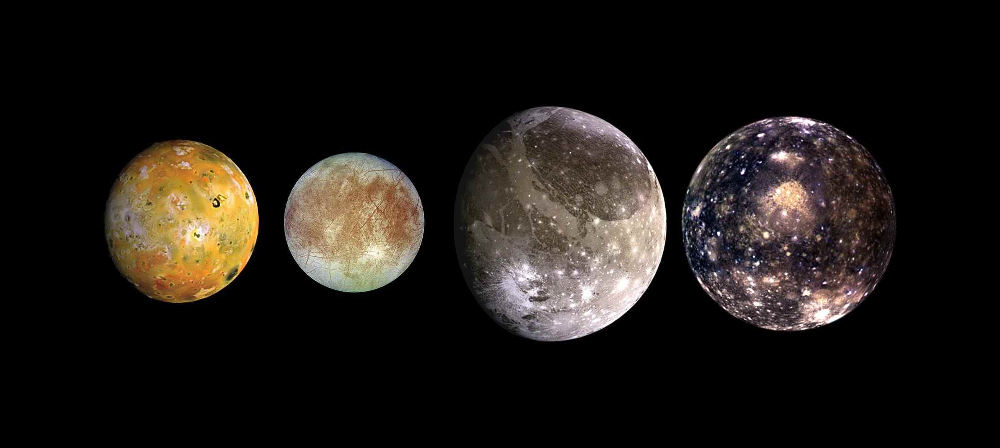

Site Planeta Terra: http://planeta-terra.info/sistema-solar.html
Bem vindo ao site do sistema solar. Até o século XVI, acreditava-se que a Terra era o centro do universo. Que tudo, inclusive o Sol, girava em torno do eixo de nosso planeta. Mais tarde, com Nicolau Copérnico, começou-se a considerar a ideia de que o Sol seria o centro do universo. Os anos se passaram e nossos conhecimentos sobre o espaço se desenvolveram. Chegamos à resposta de que existe um grande infinito: galáxias, outros planetas, estrelas maiores que o Sol. Por fim, vimos que o Sol, influenciava diretamente a órbita de oito planetas, dentre eles, a Terra. O Sistema Solar é formado pelo Sol e pelos planetas: Mercúrio, Vênus, Terra, Marte, Júpiter, Saturno, Urano e Netuno. Os planetas seguem essa ordem partindo, como ponto inicial, o Sol. Não só os planetas que circulam em torno do Sol: existem estrelas, satélites naturais (chamadas de luas) e outros corpos espaciais. Todo o Sistema Solar está dentro de algo maior: a Via Láctea (a galáxia formada por milhares de estrelas e corpos celestes e que abriga o Sistema Solar).
Origem do Sistema Solar
O sol e o Sistema Solar tiveram origem há 4,5 bilhões de anos a partir de uma nuvem de gás e poeira que girava ao redor de si mesma. Sob a ação de seu próprio peso, essa nuvem se achatou, transformando-se num disco, em cujo centro formou-se o sol. Dentro desse disco, iniciou-se um processo de aglomeração de materiais sólidos, que, ao sofrer colisões entre si, deram lugar a corpos cada vez maiores, os outros planetas. A composição de tais aglomerados relacionava-se com a distância que havia entre eles e o sol. Longe do astro, onde a temperatura era muito baixa, os planetas possuem muito mais matéria gasosa do que sólida, é o caso de Júpiter, Saturno, Urano e Netuno. Os planetas perto dele, ao contrário, o gelo evaporou, restando apenas rochas e metais, é o caso de Mercúrio, Vênus, Terra e Marte.
Astros, planetas e satélites
Astros
Sol O Sol, nossa fonte de luz e de vida, é a estrela mais próxima de nós e a que melhor conhecemos. Basicamente, é uma enorme esfera de gás incandescente, em cujo núcleo acontece a geração de energia através de reações termonucleares. O estudo do Sol serve de base para o conhecimento das outras estrelas, que de tão distantes aparecem para nós como meros pontos de luz. Apesar de parecer tão grande e brilhante (seu brilho aparente é 200 bilhões de vezes maior do que o de Sírius, a estrela mais brilhante do céu noturno), na verdade o Sol é uma estrela bastante comum. Algumas das características listadas acima são obtidas mais ou menos diretamente. Por exemplo, a distância do Sol, chamada Unidade Astronômica, é medida por ondas de radar direcionadas a um planeta em uma posição favorável de sua órbita (por exemplo Vênus, quando Terra e Vênus estão do mesmo lado do Sol e alinhados com ele). O tamanho do Sol é obtido a partir de seu tamanho angular e da sua distância. A massa do Sol pode ser medida a partir do movimento orbital da Terra (ou de qualquer outro planeta) usando a terceira lei de Kepler. Sabendo então sua massa e seu raio temos a densidade média do Sol. Outras características são determinadas a partir de modelos. Por exemplo, a equação de equilíbrio hidrostático, permite determinar a pressão e a temperatura no centro do Sol, supondo que elas têm que ser extremamente altas para suportar o peso das camadas mais externas. A primeira determinação quantitativa da composição química da atmosfera solar foi obtida em 1929 por Henry Norris Russel (1877-1957), publicada no Astrophysical Journal, 70, 11, baseada em estimativas a olho das intensidades das linhas no espectro solar.

Imagem das luas de jupiter do sistema Solar